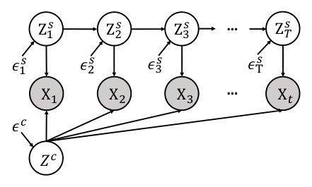
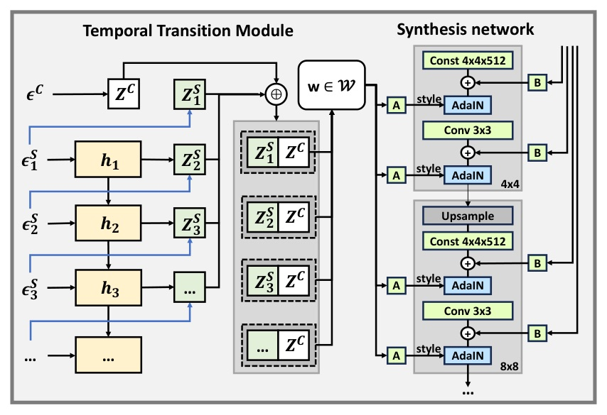
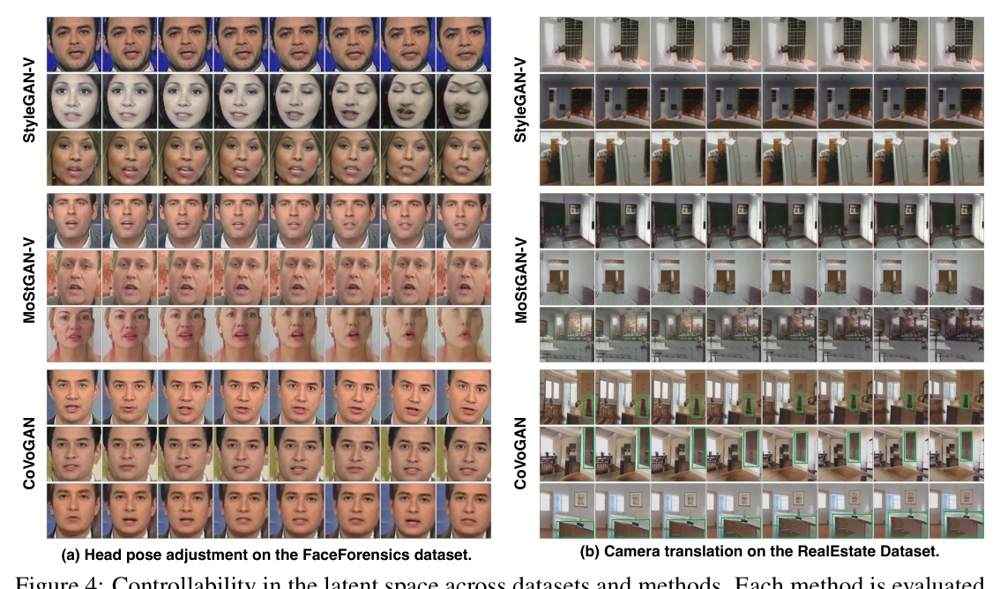
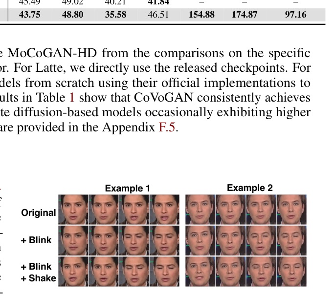

將「可控影片」從直覺上的 latent editing，拉到帶明確條件的可識別性問題。
CoVoGAN 把 content 和 motion 拆成不同 latent，並讓 motion 的各成分在歷史條件下分開。
它的重點不是「多一個 GAN 模組」，而是理論條件與架構設計的對齊。


GRU 摘要歷史；Deep Sigmoid Flow 對每個動態成分個別變換。
content 支路不要求 components 彼此獨立；兩支路串接後輸入 synthesis network。
| Theory condition | Model choice | Operational role |
|---|---|---|
| Minimal changes | small ns | 較少的動態 latent 對應 block-wise identification |
| Conditional independence | component-wise DSF | 給定 history 後隔離 dynamics entries |
| Unknown time lags | GRU gating | 選擇性過濾不相關歷史 |
| Observation equivalence | video discriminator | 擬合 joint video distribution |

| Dataset / FVD | CoVoGAN | Best listed baseline |
|---|---|---|
| FaceForensics FVD8 | 43.75 | 45.49 Latte |
| FaceForensics FVD16 | 48.80 | 49.02 Latte |
| RealEstate FVD8 | 154.88 | 182.86 DIGAN |
| RealEstate FVD16 | 174.87 | 178.27 DIGAN |
| CelebV-HQ FVD16 | 97.16 | 127.62 MoStGAN-V |
FVD 越低越好。CoVoGAN 在該資料集 8-frame 指標較低，但 16-frame 指標不是最低。
| Metric | CoVoGAN | Best listed baseline |
|---|---|---|
| MCC (%) | 33.78 | 29.00 StyleGAN-V |
| SAP (%) | 8.48 | 5.90 MoStGAN-V |
| Modularity (%) | 17.37 | 13.48 MoStGAN-V |
Diffusion models 沒有 compact latent；作者先取 frame-wise representations，再以 PCA 壓至 128 dimensions 計算對照指標。

TTM 的效果來自兩件事必須同時成立：
GRU 用 gating 縮小有效的 history；component-wise flow 用條件獨立與 sufficient changes，避免不同 motion factor 再混回去。
| FaceForensics | CoVoGAN | w/o GRU | w/o flow |
|---|---|---|---|
| FVD16 (lower) | 48.80 | 53.68 | 82.81 |
| MCC (%) | 33.78 | 26.59 | 8.22 |
| SAP (%) | 8.48 | 7.25 | 0.55 |
| Modularity (%) | 17.37 | 12.40 | 10.24 |
這是根據本文 architecture、metrics 與 ablation 的工程性解讀，不是作者額外實驗結論。
Most existing methods for controlling video generation treat the video as a whole, neglecting intricate fine-grained spatiotemporal relationships, which limits both control precision and efficiency.
多數既有方法把影片視為整體，忽略細緻的時空關係，因而同時限制控制精度與效率。Abstract p.1
To enforce temporally conditional independence, we employ a component-wise flow model that transforms a set of independent noise variables into the style dynamics, conditioned on historical information.
為了滿足時間條件獨立性，方法用逐分量 flow，在歷史資訊條件下把獨立噪聲轉為 style dynamics。§4.2 p.7
Substituting the component-wise flow with a fully connected MLP results in an even more significant degradation.
以全連接 MLP 取代逐分量 flow，會造成更顯著的退化。§5.4 p.9
Fine-grained video control becomes much more credible when the latent intervention is tied to conditions that make the factor identifiable.